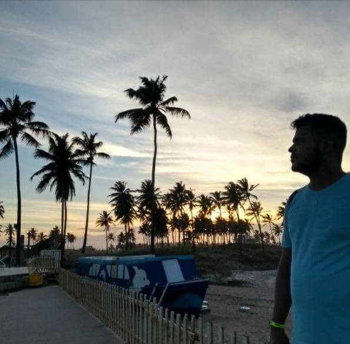

Um blog criado por mim, especifico para que eu gosto
Escritores
Nosso blog é Constituido por algumas mentes brilhantes que se dedicam a entregar o
melhor conteúdo. Venha quem são nossos colaboradores:
Gustavo Pessoa

Corpo de Homem e Alma de Criança, muito "na dele", o que as pessoas costumam rotular, por parte delas, como "Metido" na verdade é apenas uma boa dose de timidez. Desenvolvedor de Alguma coisa ligada a T.I. Apaixonado por Animes e Dramas Orientais, vulgos Doramas.
Bipolar assumido e diagnosticado que ao longo dos anos aprendeu muito sobre o "eu", uma boa dose de alto conhecimento, altos e baixos, indas e vindas.
Um cara normal como qualquer outro, cheio de defeitos e com muitas qualidades, especial com seu jeito de ser.
Canceriano nato, não que isso seja muita coisa. Super familia, Marido devotado, amoroso e apegado. Amigo leal, fiel e "pau pra toda obra", "sem julgamentos desnecessários né?!".
Preocupado com o lado espirutal e religioso, zeloso com aquilo que acredita ser verdadeiro e bom.
Estudioso e dedicado profissionalmente, não tem "corpo mole" quando o assunto é fazer a coisa certa da forma certa. As vezes ansioso e hiperativo.
Vanilson Fickert
Corpo de Homem e Alma de Criança, muito "na dele", o que as pessoas costumam rotular, por parte delas, como "Metido" na verdade é apenas uma boa dose de timidez. Desenvolvedor de Alguma coisa ligada a T.I. Apaixonado por Animes e Dramas Orientais, vulgos Doramas.
Bipolar assumido e diagnosticado que ao longo dos anos aprendeu muito sobre o "eu", uma boa dose de alto conhecimento, altos e baixos, indas e vindas.
Um cara normal como qualquer outro, cheio de defeitos e com muitas qualidades, especial com seu jeito de ser.
Canceriano nato, não que isso seja muita coisa. Super familia, Marido devotado, amoroso e apegado. Amigo leal, fiel e "pau pra toda obra", "sem julgamentos desnecessários né?!".
Preocupado com o lado espirutal e religioso, zeloso com aquilo que acredita ser verdadeiro e bom.
Estudioso e dedicado profissionalmente, não tem "corpo mole" quando o assunto é fazer a coisa certa da forma certa. As vezes ansioso e hiperativo.